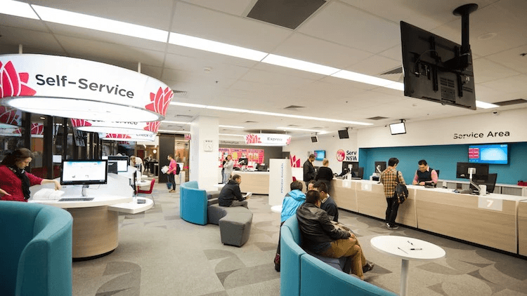
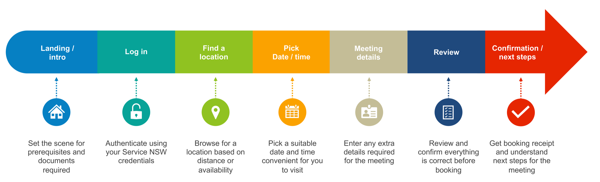
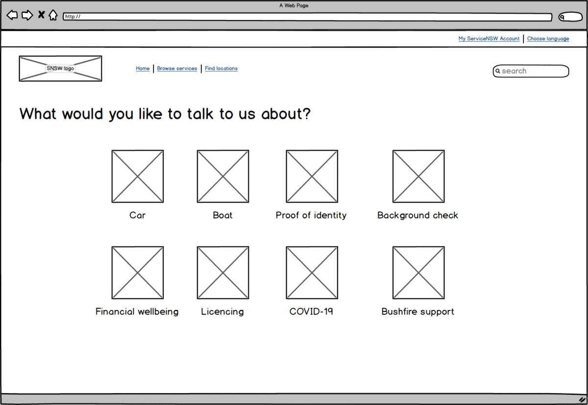
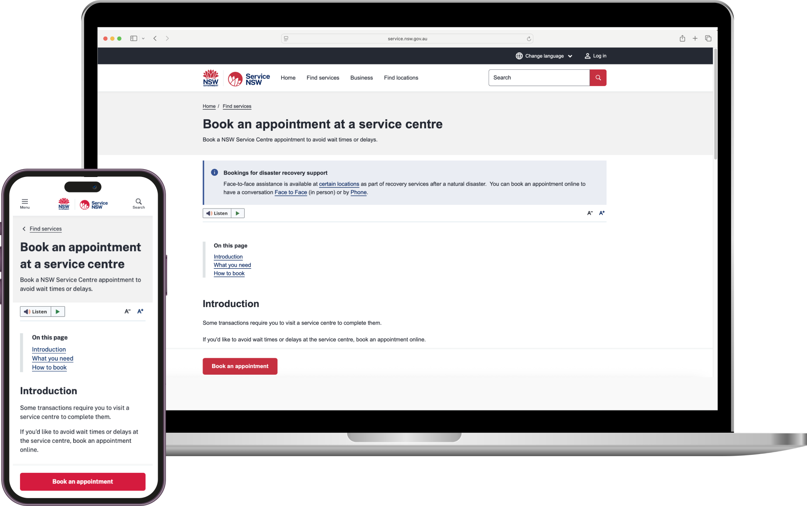

8 million lives, simplified.
I was asked to fix driving test bookings. I saw something much bigger.
Service NSW needed to replace an end-of-life system for booking driving tests. That was the brief. But once I started the discovery work, it became clear this was a symptom of a much larger problem — there was no universal way for 8 million NSW citizens to book any appointment with their government.
Walk into a Service Centre and you might be there 10 minutes or 2 hours. No-one knew. In regional areas, people were driving hours to places like Dubbo with no certainty their visit would be productive. The automated queuing system at the door was so hard to navigate that every centre needed a Concierge to operate it on behalf of customers.
I pushed the scope. First from driving tests to all Transport for NSW bookings — maritime licences, knowledge tests — where the user journeys overlapped significantly. Then further, to all 181 transaction types that Service NSW handled. And ultimately, to a vision for a single booking platform across all NSW Government departments: Health, Education, Justice, the lot.
Executive Management embraced the vision. What started as a driving test fix became the front door to government services for an entire state.

Designing for everyone means testing with everyone
A government platform has to work for all citizens, not just the digitally literate ones. We ran card sorting workshops with Service Centre managers to restructure the IA across all 181 transaction types, then validated it across two rounds of usability testing with the general public.
The first cohort was skewed towards regional and rural users. The second was skewed towards culturally and linguistically diverse (CALD) communities — English as a second language. The new IA was overwhelmingly validated: 7 out of 8 in cohort 1 and 6 out of 8 in cohort 2 completed all tasks successfully.
Beyond IA validation, the generative research confirmed what we suspected: the uncertainty of wait times was the core pain point. Nobody was confident about how long they’d be at the Service Centre. For metro users it was an annoyance. For regional users who’d driven hours to get there, it could derail their entire day.
A booking system wasn’t just a nice-to-have. It was the single highest-impact improvement we could make to the citizen experience.

Best in class, not just best in government
I deliberately looked beyond how other Australian states handle government bookings. The benchmark I kept coming back to was the Apple Store — how you book a Genius Bar appointment to get a device fixed. You choose a time, you show up, and someone is ready for you. That confidence and simplicity was the target, regardless of whether the booking was for a driving test, a birth certificate, or a firearms licence.
I analysed every booking type we could face and found that a single variable model could handle all of them. One flexible journey, not dozens of bespoke flows. That was the architectural decision that made the platform scalable.

One prototype, two audiences, zero handoff
We started with Balsamiq wireframes for early stakeholder collaboration — low enough fidelity that everyone felt comfortable contributing, but structured enough to map the full journey. From there, I built a data-rich, fully interactive HTML prototype.
There were so many permutations of the booking journey that flat design files couldn’t capture them. The prototype handled real branching logic, different transaction types, location selection, and time slot availability. It felt like the real thing because it behaved like the real thing.
This is where my philosophy of Data Driven Design pays dividends. The prototype served two purposes simultaneously: testing with real citizens to validate the experience, and demonstrating the vision to executive stakeholders who needed to see it working before they’d back it.
It proved spectacularly effective at both. Citizens validated the flows. Executives greenlit the expanded scope. One artefact, two audiences, zero handoff delay.
From driving test fix to state-wide platform
The platform I designed and architected launched with Careers NSW as its first use case, with my original wireframes, journeys and high-fidelity visuals implemented almost flawlessly. It has since expanded to service centre appointments — the use case I was most passionate about — giving citizens the ability to book a time and know their visit will be productive.

Seeing the bigger picture — and building it
This project shows what happens when you combine strategic thinking with the ability to make ideas tangible. I didn’t just identify the opportunity to expand the scope — I built the prototype that convinced executives to back it. I didn’t just design for the default user — I tested with regional communities and non-native English speakers to make sure it worked for everyone.
A driving test booking fix became a platform serving 8 million people. That’s what happens when you zoom out.